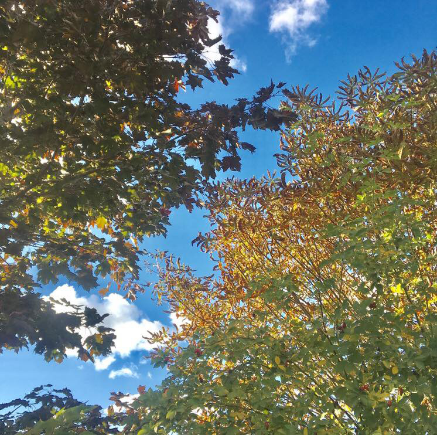
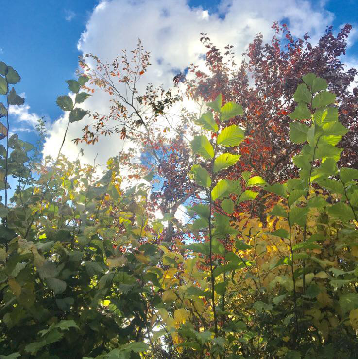
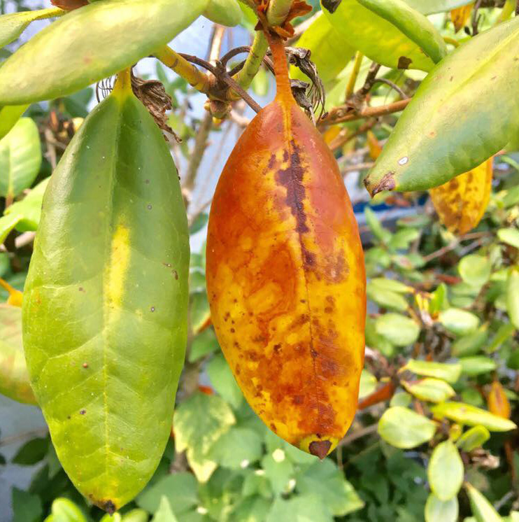

DEN GRØNNE HAVE
Mit nye projekt ”Den grønne have”, er en forholdsvis ny ide som jeg har fået.
Den er langt fra færdig, men her er en lille forsmag på min ide til projektet.
Min idé er at skabe et projekt med smukke grønne naturbilleder,
som er blevet leget med i photoshop på en eller anden måde.


